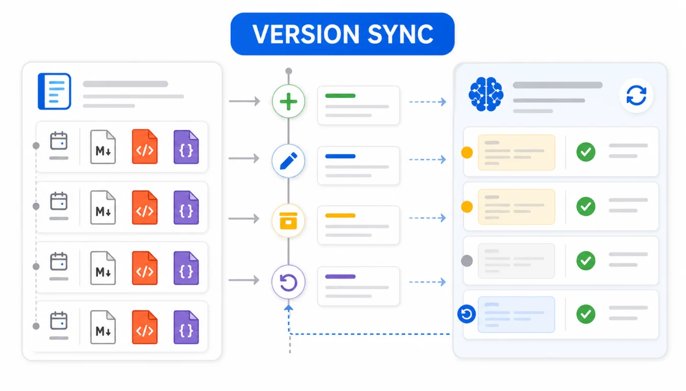

AI 知识库最容易被忽略的问题不是“第一次怎么建”，而是“一个月后还准不准”。幕布里的产品规则、客服 FAQ、项目复盘和 SOP 会持续变化，如果知识库没有增量更新、版本记录和回滚方案，回答很快就会引用旧资料。
这篇讲维护期，不重复讲 Dify、Coze、NotebookLM 的上传步骤。核心思路是：每次从幕布导出都保留日期批次，Markdown 用于更新，HTML 用于人工对照，JSON 用于回滚和重新转换，问题集用于复验。
快速答案：为 AI 知识库建立固定更新目录；每次导出 Markdown、HTML、JSON；记录新增、修改、删除和归档文件；只更新发生变化的主题包；更新后复跑核心问题集；发现异常时回滚到上一个可用批次，不要在平台里盲目覆盖。

一次导入不是知识库，持续维护才是知识库
很多团队第一次搭 AI 知识库时很认真：导出、清洗、上传、测试。但后续只要有人随手上传一批新资料，或者把旧文档和新文档混在一起，前面的验收就会失效。
维护期最重要的是三件事：
- 知道这次更新改了哪些资料。
- 知道回答质量是否因为更新变差。
- 知道出问题时怎样回到上一个可用版本。
推荐版本目录
每次更新都按日期建目录，不要覆盖旧目录：
AIKnowledgeSync/
2026-07-01/
raw/
Markdown/
HTML/
JSON/
clean/
changelog.md
rag-check.md
2026-07-21/
raw/
Markdown/
HTML/
JSON/
clean/
changelog.md
rag-check.md
这样一来，2026-07-21 的知识库如果出问题，你可以对比 2026-07-01 的 clean 目录和变更日志，快速找到是哪个文档引入了错误。
每次导出哪些格式？
| 格式 | 维护期用途 | 为什么要保留 |
|---|---|---|
| Markdown | 更新 AI 知识库主资料源 | 可编辑、可对比、适合分段检查 |
| HTML | 人工打开对照 | 方便业务同学确认内容是否完整 |
| JSON | 原始结构备份和回滚 | 以后可重新生成不同格式资料源 |
| PDF/Word | 制度和定稿材料补充 | 适合审阅、归档和对外交付 |
如果时间有限，至少保留 Markdown + JSON。Markdown 用于更新，JSON 用于重新转换和追溯幕布节点。
变更日志要写什么？
不需要写成长报告，但要能回答“这次为什么更新”。可以用这个模板：
# 2026-07-21 AI 知识库更新日志
## 来源
- 幕布目录：客服 FAQ / 退款规则 / 发布 SOP
- 导出格式：Markdown + HTML + JSON
## 变更
- 新增：8 篇
- 修改：12 篇
- 删除：3 篇旧流程
- 归档：5 篇 2025 旧版资料
## 风险
- 退款规则变更，需重点复验客服问答
- 两篇文档包含客户案例，已脱敏
## 复验
- 核心问题集：20 个
- 通过：18 个
- 待修复：2 个
这份日志会让更新变成可管理的流程，而不是“某天有人传了一批文件”。
增量更新怎么做？
理想情况是只更新变更的主题包，例如只更新 customer-faq，不动 internal-sop。如果目标平台支持逐文件删除和替换，就按文件更新；如果不支持，就按主题重建一个小知识库，不要全站重传。
| 变更类型 | 建议动作 | 复验重点 |
|---|---|---|
| 新增资料 | 加入 clean 目录并上传 | 新问题能否命中新资料 |
| 修改规则 | 替换旧文件，旧版移入 archive | 是否还引用旧规则 |
| 删除过期资料 | 从上传包和平台知识库中移除 | 旧问题是否停止引用该资料 |
| 敏感信息修订 | 脱敏后重新上传，记录处理方式 | 是否仍能检索到原始敏感值 |
更新后必须复跑问题集
知识库更新后，不要只看“上传成功”。至少复跑核心问题集：
- 最常见的 10 个业务问题。
- 最容易答错的 5 个边界问题。
- 本次变更涉及的 5 个新问题。
- 一个无资料问题，用来检查是否编造。
如果更新的是客服规则、价格政策、权限流程这类高风险资料，问题集要更严格。回答变差时，先回看变更日志和本次新增文件。
什么时候需要回滚？
出现下面情况，不要继续补丁式修改，先回滚到上一个可用版本：
- AI 开始引用 archive 中的旧规则。
- 敏感信息出现在回答或引用片段中。
- 核心业务问题连续命中错误来源。
- 本次上传混入了未经审核的草稿。
- 团队无法确认哪些文件被覆盖。
回滚不是失败，而是知识库治理的一部分。只要你保留了日期目录、raw 导出和 clean 上传包，回滚成本就可控。
用 Git 或网盘做版本记录可以吗？
可以。Markdown 和 JSON 都很适合版本管理。技术团队可以把 clean 目录放进 Git，业务团队也可以用网盘日期目录管理。重点不是工具，而是不要覆盖旧版本。
如果用 Git，建议只提交清洗后的 Markdown 和必要的 JSON 备份，敏感资料不要进入公共仓库。大型图片和 PDF 可以放在受控网盘中，只在日志里记录路径。
常见问题
幕布本身没有增量导出按钮怎么办？
可以用日期目录模拟增量。每次导出后，对比文件名、目录和修改清单，只把本次变更主题整理到 clean 上传目录。关键是记录批次，而不是一定依赖平台增量能力。
每次都导出 JSON 有必要吗？
如果知识库重要，建议保留。JSON 是重做转换和回溯幕布原始结构的后路，尤其适合后续需要换平台或调整分段策略时使用。
更新后旧答案还会被缓存吗？
不同平台的缓存和索引策略不同。实际验收时不要只看文件是否上传，要重新提问核心问题，确认回答和引用已经来自新资料。
总结：知识库要有版本感
AI 知识库不是一次性资料搬家，而是持续运营的内容系统。幕布导出工具能把资料批量变成 Markdown、HTML、JSON；版本目录、变更日志、问题集和回滚机制，决定这些资料能不能长期可靠。
从今天开始，不要再用“最新资料.zip”覆盖旧包。用日期、变更日志和复验表管理知识库，后面排查问题会轻很多。
相关链接：